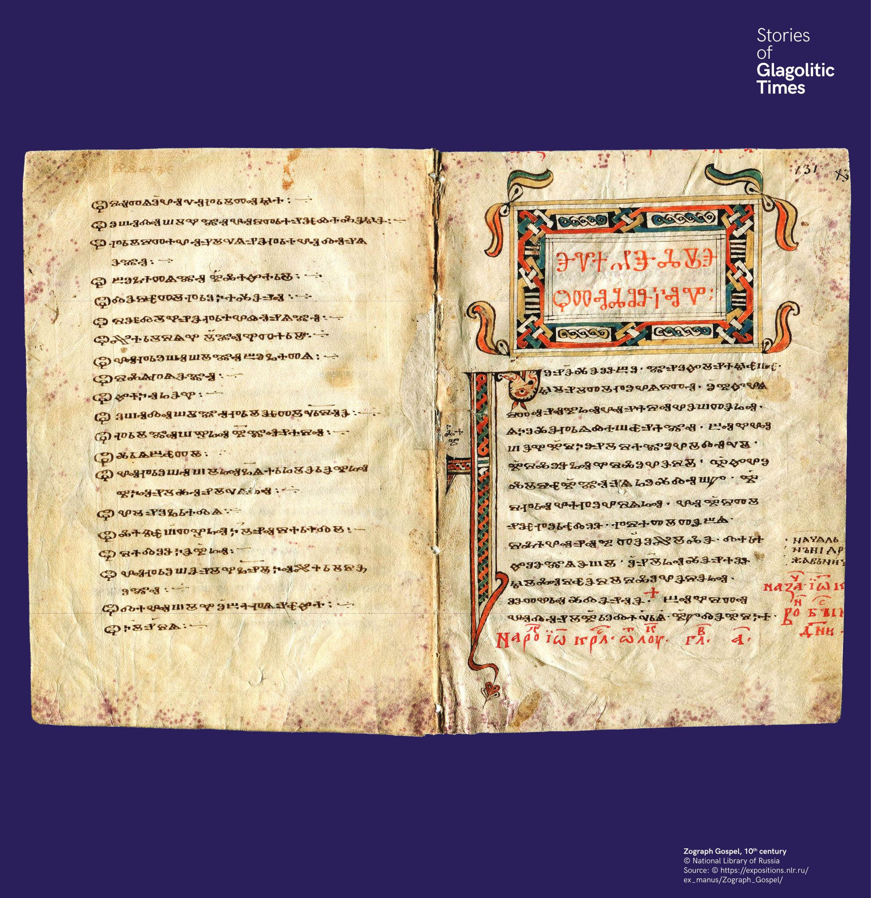

Sárkányfejű iniciálék
Az iniciálék a glagolita kéziratok díszítésének fontos elemei. A Zograf-evangéliumban a glagolita P (Ⱂ) betű hurka sárkány fejét formázza. Ugyanez a sárkány több korai kéziratban is megjelenik.


Az iniciálék a glagolita kéziratok díszítésének fontos elemei. A Zograf-evangéliumban a glagolita P (Ⱂ) betű hurka sárkány fejét formázza. Ugyanez a sárkány több korai kéziratban is megjelenik.
Инициалите са много важен елемент от украсата на глаголическите ръкописи. В Зографското евангелие примката на глаголическата буква П (Ⱂ) е оформена като глава на дракон.